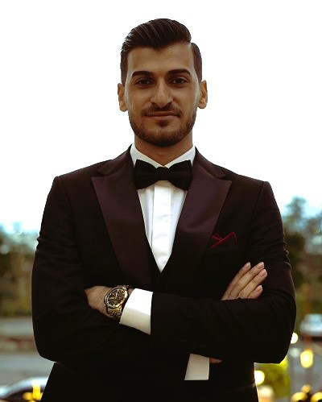

ML Research Engineer • Real-Time AI Systems • Multimodal Perception
Deployable AI for perception, adaptation, and real-world autonomy.
Research-oriented AI engineer with hands-on experience in multimodal learning, reinforcement learning, computer vision, embedded AI systems, physiological signal analysis, and robust speech emotion recognition under noisy and dynamic environments.

Open to AI engineering, research, and deployable perception collaborations
Core research interests
Embodied AI
Intelligent Robotics
Autonomous Systems
Computer Vision
Real-Time Perception
Multimodal Learning
Edge AI
Reinforcement Learning
Research Summary
AI systems for latency, hardware limits, noisy sensors, and continuous acquisition.
My work connects machine learning research with deployable engineering. I have worked on real-time industrial perception pipelines, physiological signal analysis, robust speech emotion recognition, and embedded AI systems designed for noisy, dynamic environments.
I am especially interested in embodied AI, autonomous systems, adaptive perception, and intelligent systems that must operate under real-world constraints such as latency, hardware limitations, and continuous sensory acquisition.
Best-fit roles
AI Engineer, ML Research Engineer, Computer Vision Engineer, Real-Time Perception Engineer, Edge AI Developer, and Multimodal AI Researcher.
Complete Resume
Structured from the latest resume content.
Education
M.Sc. in Electrical Engineering
Machine Learning, Intelligent Systems, Computer Vision
- Thesis focused on developing reinforcement learning environments with dynamically varying acoustic noise for robust speech emotion recognition under non-stationary conditions using PPO and DDPG-based strategies.
- Designed adaptive training pipelines for improving robustness of speech emotion recognition systems in continuously changing noisy environments.
- Designed and collected a Persian emotional speech dataset for speech emotion recognition research.
- Developed cost-effective labeling and evaluation methodologies for large-scale emotion annotation workflows.
B.Sc. in Electrical Engineering
Electronics, Embedded Systems
- Designed and implemented quadcopter flight control systems using AVR microcontrollers during early independent robotics projects.
- Implemented PID control and Kalman filtering methods for attitude estimation and stabilization systems.
- Built experience with embedded Linux systems, Raspberry Pi platforms, and hardware-aware AI deployment.
Work & Research Experience
2025–Present
Computer Vision & AI Systems Engineer
Industrial Automation Company
- Architected real-time industrial perception pipelines integrating OCR, OBB detection, ONNX inference, and classical computer vision methods.
- Developed intelligent imaging systems for high-resolution industrial inspection operating under real-time latency constraints.
- Designed active-learning infrastructures using Label Studio and iterative retraining workflows, increasing annotation throughput by approximately 10×.
- Built scalable AI deployment workflows for embedded edge devices and hardware-aware inference systems.
- Led collaborative engineering workflows involving modular AI deployment pipelines, experiment tracking, and reproducible evaluation practices.
2022–2024
AI Research Engineer — Intraoperative Neuromonitoring
Medical Device Research Laboratory
- Developed machine learning methods for real-time neural signal monitoring and artifact detection in healthcare environments.
- Worked on multimodal physiological signal analysis involving EEG, PPG, and GSR signals.
- Contributed to signal acquisition, preprocessing, feature extraction, and evaluation pipelines for intelligent healthcare systems.
Research Project
EEG-Based Arousal Detection Research
Affective Computing and Physiological Signal Analysis
- Collected and analyzed EEG, GSR, and PPG datasets from gaming environments for affective computing and arousal estimation research.
- Developed multimodal preprocessing and machine learning pipelines for physiological signal analysis.
2021–Present
Independent AI Systems Engineer
Applied AI & Deployment Projects
- Developed AI systems across computer vision, NLP, intelligent automation, and deployment-focused applications.
- Re-engineered AI repositories and inference pipelines for scalability, maintainability, and real-world deployment.
- Built GPU-enabled inference environments and deployment infrastructures for applied machine learning systems.
Publications
Persian Emotional Speech Database: Machine Learning-Based Evaluation and Cost-Effective Labeling Approach
Machine Learning-Enhanced Surface Plasmon Resonance Based Photonic Crystal Fiber Sensor
Deep Learning-Based Arousal and Valence Estimation Using Multimodal Physiological Signals
Contributed to multimodal EEG, GSR, and PPG dataset acquisition from gaming environments and developed affective computing models for emotional state prediction.
Lightweight Attention-Based Speech Emotion Recognition Model
Reinforcement Learning-Based Robust Speech Emotion Recognition in Dynamic Noisy Environments
Independent Projects & Engineering Initiatives
Applied AI, embedded systems, conversational AI, and robotics foundations.
Hoosha — Persian Embedded Voice Assistant
- Developing a modular Persian voice assistant integrating ASR, TTS, local LLM inference, retrieval pipelines, modular AI orchestration, and embedded deployment.
- Focused on low-latency edge-AI interaction systems for resource-constrained hardware environments.
SARV — Psychological Support Chatbot
- Developed an experimental conversational AI assistant focused on supportive dialogue and Persian-language interaction design.
- Explored dialogue management, response generation, and user-centric conversational workflows.
Lootka — Multi-Purpose Chatbot System
- Designed modular chatbot pipelines integrating NLP workflows, automation tools, and deployable AI services.
- Worked on scalable backend orchestration and inference integration.
Custom Quadcopter Flight Controller
- Designed and implemented quadcopter stabilization and flight-control systems using AVR microcontrollers.
- Implemented PID control and Kalman filtering for attitude estimation and stabilization.
Cessna 150 RC Aircraft Model
- Independently designed and built a fixed-wing RC aircraft model from scratch during early robotics and embedded systems exploration.
- Worked on mechanical assembly, electronics integration, and flight-system experimentation.
AVR Microcontroller Workshops
- Conducted embedded systems workshops and supported early engineering education initiatives.
- Received commendation recognition connected to embedded systems development and engineering education.
Technical Skills
A practical AI toolkit from research modeling to edge deployment.
Machine Learning & AI
PyTorch, Reinforcement Learning (PPO, SAC, DDPG), Transfer Learning, ViT, DETR, YOLO
Computer Vision
OCR, OBB Detection, OpenCV, Real-Time Vision Systems, Industrial Imaging
Embedded & Edge AI
ONNX Runtime, Embedded Linux, Raspberry Pi, Edge AI Deployment, Hardware-Aware Inference
Signal Processing
Speech Emotion Recognition, Audio Signal Processing, EEG/PPG/GSR Analysis
Programming
Python, C/C++, Bash
Infrastructure & Tools
Docker, Label Studio (Active Learning), Git, FastAPI, CI/CD, Linux Administration
Teaching & Leadership
Mentorship across machine learning and embedded AI.
- Teaching Assistant — Machine Learning, Amirkabir University of Technology | 2021–2023.
- Assisted undergraduate machine learning courses covering supervised learning, neural networks, and optimization methods.
- Supported students in assignments, implementation discussions, and practical machine learning workflows using Python and PyTorch.
- Mentored engineers in embedded AI deployment, debugging workflows, and collaborative AI system development.
Honors & Languages
Recognition
Received three commendation letters from the University of Guilan and Guilan Science and Technology Park for contributions to embedded systems development and engineering education.
English Upper-Intermediate (B2)
Persian Native
Let’s build intelligent systems